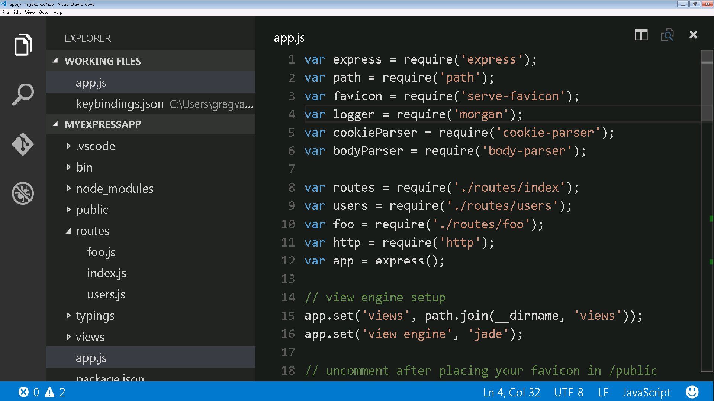
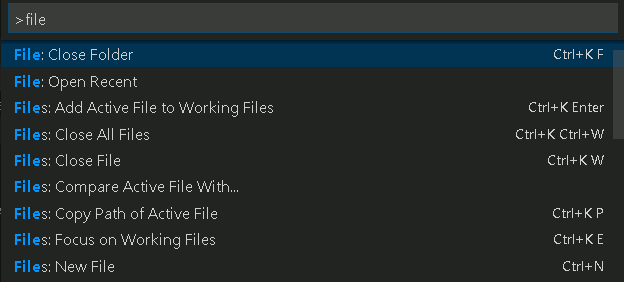
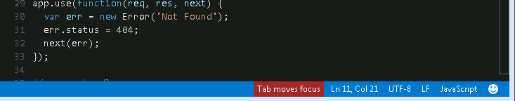

Accessibility 易用性
Visual Studio Code has many features to help make the editor accessible to all users. Zoom and High Contrast colors improve editor visibility, keyboard-only navigation allows use without a mouse and the editor has been optimized for screen readers.
Visual Studio Code有很多特性能够帮助用户更容易地实现编辑。缩放和高对比度色彩提升了编辑器的可视性，纯键盘导航能够让用户无需使用鼠标，同时编辑器也已经优化了屏幕阅读器。
Zoom 缩放
You can increase the Zoom level in VS Code with the View > Zoom In command (kb(workbench.action.zoomIn)). The zoom level increases by 20% each time the command is executed. The View > Zoom Out (kb(workbench.action.zoomOut)) command lets you decrease the Zoom level.
你可以在VS Code中的View > Zoom In 命令(kb(workbench.action.zoomIn))增大缩放比例。每次执行该命令，缩放比例都会增大20%。而命令View > Zoom Out (kb(workbench.action.zoomOut))则减小缩放比例。

Persisted Zoom Level 保持缩放比例
With the window.zoomLevel setting, you to change and persist the zoom level of the window. The default value is 0 and each increment increases the zoom level by 20% similar to the effect of the View > Zoom in command.
通过window.zoomLevel setting, 你可以改变和保持窗口的缩放比例。默认值为0，每一次增值都增大20%的缩放比例，类似于View > Zoom in命令的作用。
High Contrast Theme 高对比度主题
We support a High Contrast color theme on all platforms. Use File > Preferences > Color Theme to display the Select Color Theme dropdown and select the High Contrast theme.

我们支持在所有平台中的高对比度色彩主题。使用File > Preferences > Color Theme来显示Select Color Theme下拉框并选择High Contrast主题。
Keyboard Navigation 键盘导航
You will find that VS Code provides an exhaustive list of commands in the Command Palette (kb(workbench.action.showCommands)) so that you can run VS Code without using the mouse. Press kb(workbench.action.showCommands) then type a command name (e.g. 'git') to filter the list of commands.
VS Code在Command Palette (kb(workbench.action.showCommands))中提供了一个全面的命令列表，这样你在使用VS Code的过程中就无需使用鼠标。按下kb(workbench.action.showCommands) ，然后输入一个名为(e.g. 'git')的命令来筛选命令列表。
VS Code also has many preset keyboard shortcuts for commands. These are displayed to the right of the command in the Command Palette.
VS Code同时也可以通过许多预先设置的键盘快捷键来执行命令。这些快捷键展示的是Command Palette中已被授权的命令。

You can also set your own keyboard shortcuts. File > Preferences > Keyboard Shortcuts brings up the Default Keyboard Shortcuts in the left pane and your customizable keybindings.json on the right. See Key Bindings for more details on customizing or adding your own keyboard shortcuts.
你也可以设置自己的键盘快捷键。通过File > Preferences > Keyboard Shortcuts会在左边窗口打开Default Keyboard Shortcuts，右边窗口keybindings.json则是你的个性化设置。从Key Bindings中可以看到更多关于个性化和个人键盘快捷键设置的细节。
Tab Navigation 标签导航
You can use the kbstyle(Tab) key to jump between VS Code UI controls. Use kbstyle(Shift+Tab) to tab in reverse order. As you tab through the UI controls, you can see an indicator around the UI element once the element gains focus.
你可以使用kbstyle(Tab)键在VS Code的界面控件中切换。使用kbstyle(Shift+Tab) 可以在相反的顺序切换。当你在界面控件中切换时，你所选中的某个界面元素会出现指示。
Some areas that support Tab navigation are:
- The View switcher (Files, Search, Git, Debug)
- The header of collapsible sections in a view to expand/collapse
- Actions in views and sections
- Actions for items in the tree
支持标签导航的领域有：
- 视图选择（文件，搜索，Git，调试）
- 可折叠部分的标题的视图扩展／折叠
- 对视图和章节的动作
- 对树中项目的动作
Tab trapping 标签锁定
By default, pressing the kbstyle(Tab) within a source code file inserts the Tab character (or spaces depending on your Indentation setting) and does not leave the open file. You can toggle the trapping of kbstyle(Tab) with kbstyle(Ctrl+M) and subsequent kbstyle(Tab) keys will move focus out of the file. When default kbstyle(Tab) trapping is off, you will see an indicator in the Status Bar.
默认设置中，在插入了标签特性的源代码文件中（或者是取决于你的缩进设置的空间中）按下kbstyle(Tab)键不会离开正在打开的文件。你可以切换锁定的kbstyle(Tab)和kbstyle(Ctrl+M)，接着用kbstyle(Tab)键可以取消选中当前的文件。当默认的kbstyle(Tab)锁定解除，你可以在状态栏中看到相应指示。

Read-only files never trap the kbstyle(Tab) key.
只读文件不能锁定kbstyle(Tab)键。
Screen Readers 屏幕阅读器
VS Code supports screen readers in the editor using a strategy based on paging the text. We have tested using the NVDA screen reader, but we expect all screen readers to benefit from this suppport.
VS Code支持屏幕阅读器在编辑器中使用基于文档页码的策略。我们已经使用NVDA screen reader进行过测试，但是我们希望所有的屏幕阅读器都能从这种支持中受益。
The Go to Next/Previous Error or Warning actions (kb(editor.action.marker.next) and kb(editor.action.marker.prev)) allow screen readers to announce the error or warning messages.
Go to Next/Previous Error or Warning 动作
(kb(editor.action.marker.next) and kb(editor.action.marker.prev))允许屏幕阅读器通报错误或者警告信息。
When the suggestions pop up, they will get announced to screen readers. It is possible to navigate the suggestions using kbstyle(Alt+Up) and kbstyle(Alt+Down), you can dismiss the suggestions with kbstyle(Shift+Escape) and if suggestions get in your way, you can disable the auto-popup of suggestions with the editor.quickSuggestions setting.
当建议突然弹出来时，屏幕阅读器会通报给他们。你可以使用kbstyle(Alt+Up)和kbstyle(Shift+Escape)来导航该建议，以及使用kbstyle(Shift+Escape)解除建议。如果弹出的建议让你觉得困扰，你可以用editor.quickSuggestions来禁用自动弹出建议的功能。
Debugger Accessibility 调试器的可访问性
The VS Code debugger UI is user accessible and has the following feature:
- Changes in debug state are read out (e.g. 'started', 'breakpoint hit', 'terminated', ...).
- All debug actions are keyboard accessible.
- Both the Debug View and Debug Console support Tab navigation.
- Debug hover is keyboard accessible (
kb(editor.action.showHover)).
用户可以访问VS Code的调试器界面，且具有以下特性：
- 读出调试模式的改变 (e.g. 'started', 'breakpoint hit', 'terminated', ...).
- 所有的调试动作都可以用键盘访问
- 调试视图和调试控制都支持标签导航；
- 调试循环支持键盘访问(
kb(editor.action.showHover)).
Current Known Issues 现行问题
VS Code has some known accessibility issues depending on the platform.
VS Code在不同平台上有一些已知的问题。
Windows
You can not use the key board (right, left arrow keys) to move between top-level menu items (File, Edit, View, etc). This is due to Election shell issue #2504.
不可以使用键盘（右，左方向键）来移动顶层的菜单项(File, Edit, View, etc). 这主要是因为选择Shell脚本的问题#2504.
OS X
There is no screen reader support for the editor.
该平台上没有支持本编辑器的屏幕阅读器。
Next Steps 下一步
Read on to find out about:
- Visual Studio Code Basics - a quick orientation of VS Code
- Editing Evolved - from code colorization & multi-cursor to IntelliSense
阅读更多资料：
- Visual Studio Code Basics- VS Code的快速定向
- Editing Evolved- 从代码色彩化&多程光标到智能感知